GitHub repository: https://github.com/shrustishetty-2401/data260-9004
s9004qwen3:8bhw8hw8 Final tagged commit:
701d86691fb7f53273388130b1569b3d62da11d4The primary domain entity is Vulnerability.
The worker stores entities in an in-memory dictionary. Clients communicate with the worker only through Kafka.
s9004_vulnerability_requestss9004_vulnerability_responses{
"correlation_id": "unique-request-id",
"reply_to": "s9004_vulnerability_responses",
"operation": "CREATE_VULNERABILITY",
"data": {
"vulnerability_code": "HW8-DEMO-001",
"vulnerability_title": "Kafka demonstration vulnerability",
"package_name": "package-0",
"submitter_email": "student@example.com",
"description": "A sufficiently long vulnerability description.",
"category": "Input Validation",
"terms_accepted": true
}
}Successful CREATE responses return the generated UUID:
{
"correlation_id": "same-request-id",
"success": true,
"entity_id": "uuid",
"message": "Entity created"
}Successful GET responses return the complete entity:
{
"correlation_id": "same-request-id",
"success": true,
"entity": {
"entity_id": "generated-uuid",
"vulnerability_code": "HW8-DEMO-001",
"vulnerability_title": "Kafka demonstration vulnerability",
"package_name": "package-0",
"submitter_email": "student@example.com",
"description": "A sufficiently long vulnerability description.",
"category": "Input Validation",
"terms_accepted": true
}
}Error responses preserve the correlation ID and include an error message:
{
"correlation_id": "same-request-id",
"success": false,
"error": "Entity not found"
}The CREATE then GET demonstration succeeded. The GET request returned the created vulnerability entity, and correlation IDs were preserved.

Evidence:
raw/part1_create_get.lograw/part1_error_tests.jsonraw/part1_services.lograw/part1_worker_full.lograw/part1_demo_full.logThe API listens on 0.0.0.0:8004 inside Docker so that
the container port is reachable. From the host, the service was verified
through http://127.0.0.1:8004/health and returned HTTP
200.
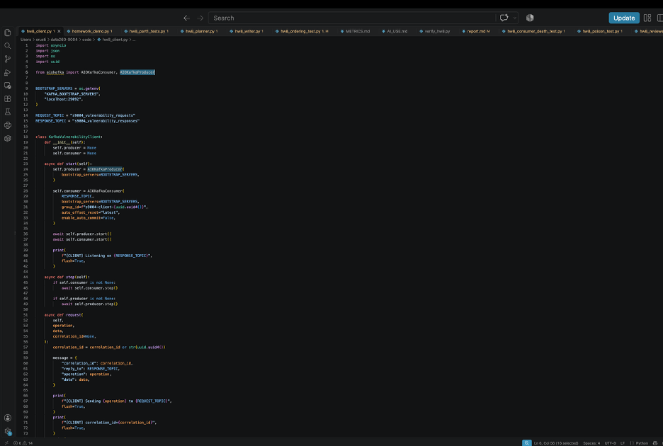
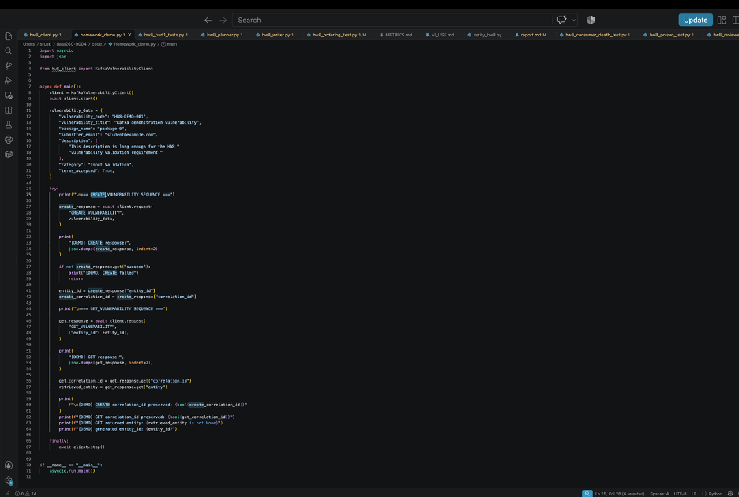
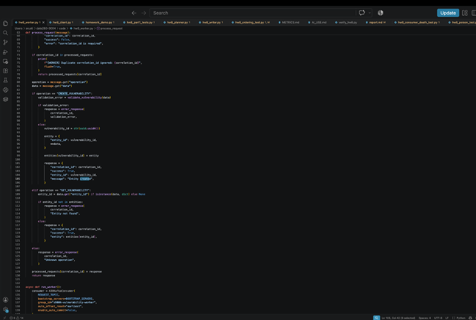
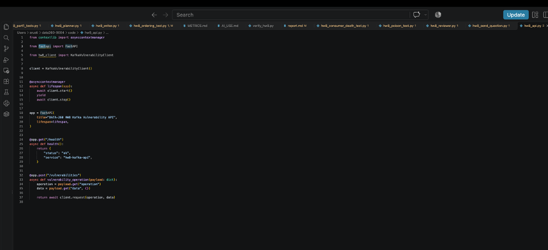
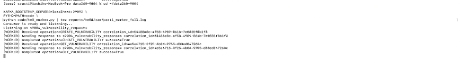
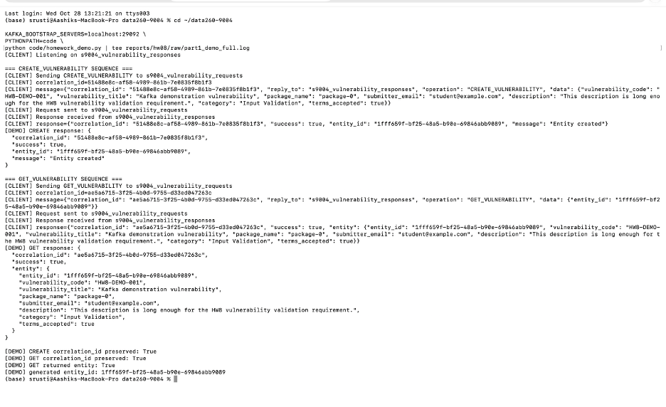
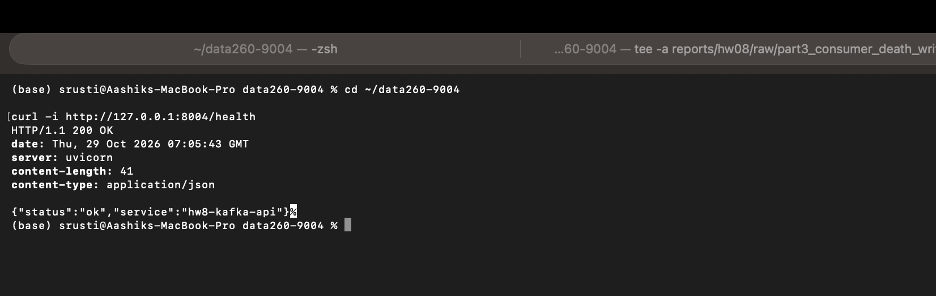
Implemented separate Planner, Writer, and Reviewer processes.
s9004_inboxs9004_taskss9004_draftss9004_finalThe pipeline completed successfully with status
approved. The task ID and correlation ID were preserved
through the pipeline.
Kafka coordinates the agents through independent topics. The Planner
publishes a plan to s9004_tasks, the Writer publishes a
draft to s9004_drafts, and the Reviewer publishes the
approved result to s9004_final. Task IDs and correlation
IDs connect the stages without requiring the agents to run in one
process.

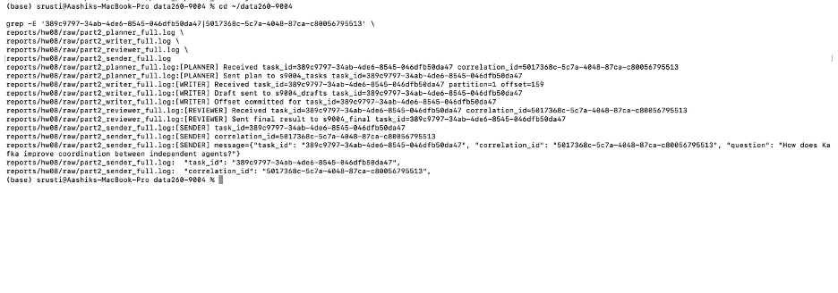
Evidence:
raw/part2_pipeline_result.jsonraw/part2_pipeline.logRUN_LOG.txtraw/part2_planner_full.lograw/part2_writer_full.lograw/part2_reviewer_full.lograw/part2_sender_full.logFor the same task, the Planner received the question and sent a plan
to s9004_tasks; the Writer received that plan and sent a
draft to s9004_drafts; and the Reviewer received the draft
and sent the approved result to s9004_final. The task ID
389c9797-34ab-4de6-8545-046dfb50da47 and correlation ID
5017368c-5c7a-4048-87ca-c80056795513 were preserved across
all stages.
The same CREATE request was delivered twice. Both responses returned the same entity ID.
same_entity_id: trueduplicate_prevented: trueEvidence:
raw/duplicate_delivery.jsonThe Writer was killed while processing task
b7bbc560-49e1-41f3-a711-158351720305. After restart, Kafka
redelivered the uncommitted task. The Writer completed the task,
published the draft, committed the offset, and the test reported
recovered_after_restart: true.
Evidence:
raw/part3_consumer_death_writer.lograw/part3_consumer_death_test.logThe Writer was stopped during a simulated long-running task. After restarting the Writer, Kafka redelivered the uncommitted message and the task completed successfully.
recovered_after_restart: truedraft_received: trueEvidence:
raw/consumer_death.jsonEvidence:
raw/consumer_death.json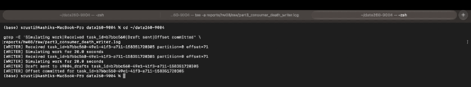
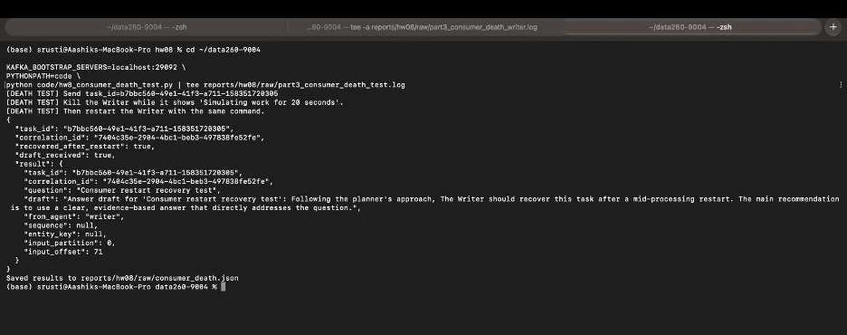
Poison messages intentionally failed processing. The Writer retried each message three times and then moved it to the dead-letter topic.
s9004_dead_lettermoved_to_dead_letter: trueEvidence:
raw/poison_message.jsonTwenty unkeyed and twenty keyed messages were tested.
| Case | Partitions | Order preserved |
|---|---|---|
| Unkeyed messages | 2 | No |
| Keyed messages | 1 | Yes |
The ordering experiment used two Kafka partitions and two Writer instances in the same consumer group. Unkeyed messages were distributed across partitions and were not globally ordered. Keyed messages used the same entity key, were routed to one partition, and preserved their order.
keyed_order_preserved: true269004
Evidence:
raw/ordering_results.jsonraw/part3_failure_summary.lograw/ordering_writer_a.lograw/ordering_writer_b.lograw/part3_writer_failure_full.lograw/part3_poison_full.lograw/part3_after_poison_full.log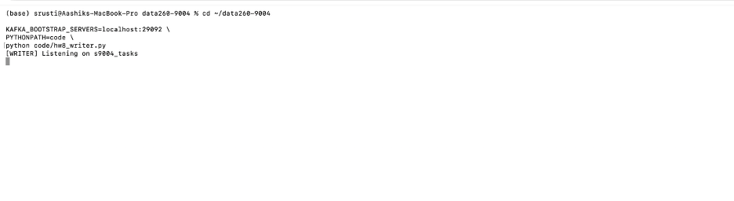
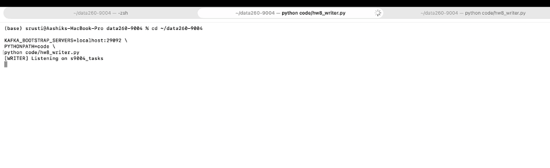
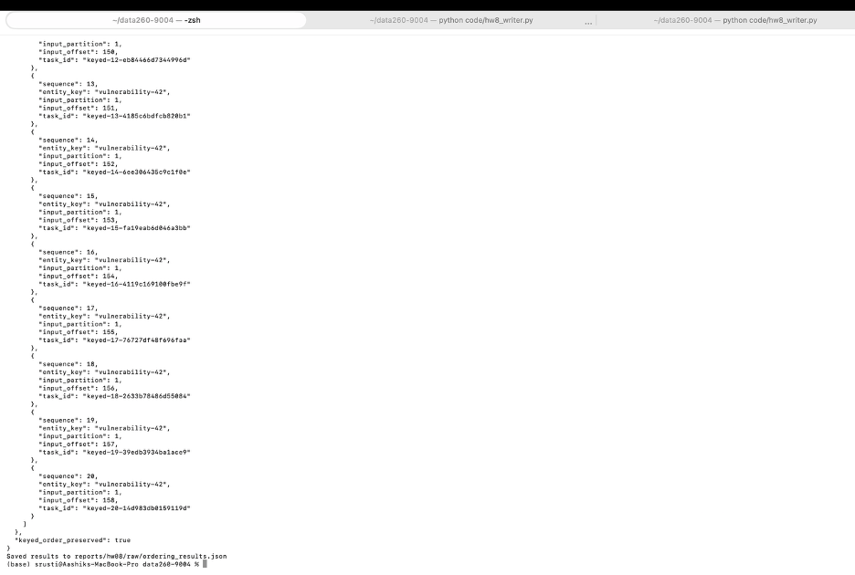
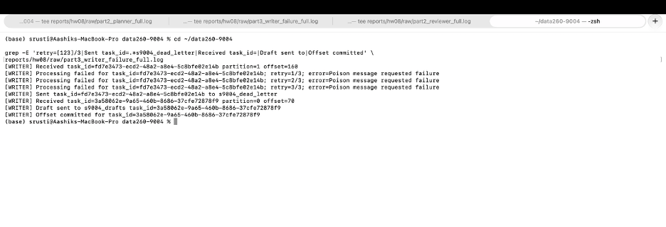
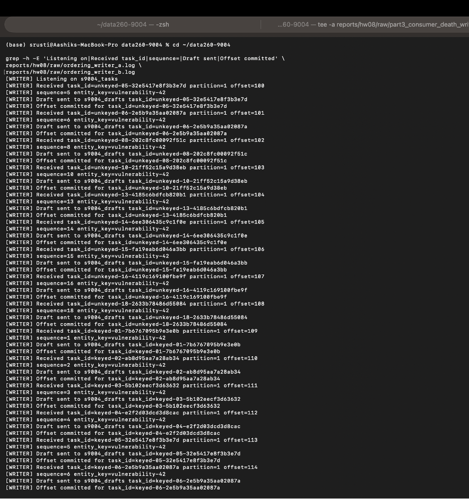
Kafka provides:
The producer is responsible for publishing valid messages and using stable keys when ordering matters. The consumer is responsible for validation, idempotency, retries, offset commits, and dead-letter handling.
The Writer was killed during a simulated long-running task before committing its offset. After restart, Kafka redelivered the uncommitted task. The Writer completed the task, published the draft, and committed the offset.
HW2 used a simpler request/response workflow. HW8 extends that design with Kafka topics, independent consumers, consumer groups, offset commits, retries, dead-letter handling, idempotency, consumer restart recovery, and key-based ordering.
Kafka adds durable asynchronous coordination, but it also requires explicit handling of commits, retries, duplicate messages, consumer failures, and ordering.
Two benefits gained from Kafka were independent scaling of agents and decoupled failure recovery. Two new responsibilities were duplicate/idempotency handling and explicit ordering and offset management.
| Failure scenario | Before fix | After fix |
|---|---|---|
| Duplicate delivery | Replay could create an additional side effect. | The same entity ID was returned and the duplicate was prevented. |
| Consumer killed mid-work | Processing stopped before the offset was committed. | Restart caused redelivery and successful completion. |
| Poison message | A bad message could continue failing without bounded handling. | The message was retried three times and moved to
s9004_dead_letter. |
| Two partitions/two consumers | Unkeyed related messages were not globally ordered. | Keyed related messages used one partition and preserved order. |
Each row is supported by the matching raw JSON or log evidence listed in the Part 3 sections above.
The worker dispatches only the two required operations:
if operation == "CREATE_VULNERABILITY":
response = create_vulnerability(data)
elif operation == "GET_VULNERABILITY":
response = get_vulnerability(data)
else:
response = {"success": False, "error": "Unknown operation"}Every response preserves the request correlation ID:
response["correlation_id"] = message["correlation_id"]
await producer.send_and_wait(reply_to, json.dumps(response).encode())Poison messages use bounded retries and then move to the dead-letter topic:
if retry_number >= MAX_RETRIES:
await producer.send_and_wait(DEAD_LETTER_TOPIC, encoded_message)
await consumer.commit()
```The Writer retries failed messages in a bounded loop:
```python
while True:
try:
await process_message(message, producer)
await consumer.commit()
break
except Exception as error:
attempts[attempt_key] += 1
retry_number = attempts[attempt_key]
if retry_number >= MAX_RETRIES:
await producer.send_and_wait(
DEAD_LETTER_TOPIC,
encoded_message,
)
await consumer.commit()
break
await asyncio.sleep(1)
Ordering uses the related entity as the Kafka message key:
```python
key = b"vulnerability-42"
await producer.send_and_wait(TASKS_TOPIC, payload, key=key)s9004_dead_letter after three failures, and
commit the offset only after dead-letter publication.RUN_LOG.txtMETRICS.mdAI_USE.mdverification.jsonraw/part1_create_get.lograw/part1_error_tests.jsonraw/part1_services.lograw/part2_pipeline_result.jsonraw/part2_pipeline.lograw/duplicate_delivery.jsonraw/consumer_death.jsonraw/poison_message.jsonraw/ordering_results.jsonraw/part3_failure_summary.lograw/part1_worker_full.lograw/part1_demo_full.lograw/part2_planner_full.lograw/part2_writer_full.lograw/part2_reviewer_full.lograw/part2_sender_full.lograw/part3_writer_failure_full.lograw/part3_poison_full.lograw/part3_after_poison_full.lograw/ordering_writer_a.lograw/ordering_writer_b.logThe verification script reported:
Overall result: all_passed: true
The final verification.json reported
all_passed: true for API health, CREATE/GET evidence, error
tests, pipeline approval, duplicate prevention, consumer recovery,
dead-letter handling, keyed ordering, and the required evidence
directory.
{ “homework”: “DATA-260 Homework 8”, “sid4”: 9004, “commit_hash”: “688891208660e40cb943af9927e0dd04f73ad9af”, “model”: “qwen3:8b”, “port_base”: 8004, “prefix”: “s9004”, “seed”: 9004, “verify_seed”: 269004, “domain_id”: 4, “checks”: { “api_health”: true, “part1_create_get_evidence”: true, “part1_error_tests”: true, “part2_pipeline_approved”: true, “duplicate_delivery_prevented”: true, “consumer_death_recovered”: true, “poison_dead_letter”: true, “keyed_ordering_preserved”: true, “required_evidence_directory”: true }, “all_passed”: true }
The complete machine-readable verification output is stored in:
verification.jsonIt records the homework name, SID4, commit hash, model, port
configuration, seeds, domain ID, all verification checks, and the final
all_passed result.
The final report PDF is:
reports/hw08/Shetty_HW8.pdf
The final submission includes the implementation, Docker/Kafka configuration, tests, screenshots, raw JSON results, logs, metrics, AI-use documentation, verification output, and the final PDF.